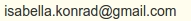

Darum geht es in Songs of God
Was
Songs of God ist eine Webseite, die christliche Lieder
mit Akkorden anbietet. Jedes Lied kann in alle verfügbaren Tonarten transponiert werden.
Es können beliebig viele Lieder ausgewählt werden, welche auf einem PDF zusammengefasst und
zum Download zur Verfügung gestellt werden.
Auf der Unterseite
Add songs kann der Liederpool
erweitert werden. Dafür sind der Liedtitel und der Liedtext mit Akkorden erforderlich, die
in entsprechende Textfelder eingegeben werden können. Unter
Anleitung wird die Syntax beschrieben, in der
die Lieder eingeschrieben werden.
Um zu sehen, wie das Lied als PDF erscheint, wird der Button
Lied prüfen geklickt. Falls es Probleme beim Hinzufügen von einem Lied gibt, kann mit dem
Hilfe-Button um Hilfe gebeten werden.
Ist ein Lied zur Zufriedenheit eingeschrieben, wird die Tonart des Liedes ausgewählt. Die zwei wahrscheinlichsten Tonarten werden als Vorauswahl angegeben.
Mit dem Button
Speichern wird das Lied im Liederpool abgespeichert und kann ab dann im Dropdown
auf der Hauptseite
Songs of God ausgewählt werden.
Unter
Edit song kann ein schon verfügbares Lied geändert werden.
Dabei erscheint der Quellcode des Liedes.
Wie
Diese Webseite ist mit dem package
Flask von Python geschrieben, mit Javascript und Html. Mithilfe einer
RESTful API kommunizieren Python und Javascript miteinander.
Die Lieder sind in Latex geschrieben, wozu für die Akkorde das package
guitar verwendet wird.
Wird ein neues Lied eingeschrieben, berechnet ein Maschine Learning Algorithmus, eine Support Vector Machine (SVM), die zwei wahrscheinlichsten Tonarten, welche als Vorauswahl angegeben werden.
Die SVM wurde mithilfe der Lieder trainiert, die bereits im Liederpool vorhanden sind und deren Tonart bereits bekannt ist.
Für jedes Lied wurden aus dem eingeschriebenen Liedtext die Akkorde extrahiert, die in einen 39-dimensionalen Vektor abstrahiert wurden. Auch die Tonart des Liedes wurde als Vektor geschrieben. Diese Vektoren gaben die Trainingsdaten, mit denen die SVM trainiert wurde.
Den Code zur Webseite findet man auf
Github.
Wer
Diese Seite wurde erstellt von Isabell Konrad. Bei Anmerkungen, Vorschlägen und Fragen schreibe an
